explain what a fossil is and how it forms in rock over time.
use fossil clues to infer what an ancient living thing looked like and how it may have lived.
use fossil evidence to describe the place where an ancient living thing once lived.
OptiWelcome to the film crew! Scientists look first and explain second. Let's hold a magnifying lens over a real fossil and see what you notice.
🔎 Mystery specimenWhat can one rock show you?
👀 What am I looking at? A real fossil from Fossil Butte, Wyoming, set out like a museum specimen. A specimen is one real object that scientists study. The card tells where it was found. What it is? That's for you to figure out.
What to do: Press Inspect specimen. Move the magnifying lens over the rock, then tap 3 things you notice.
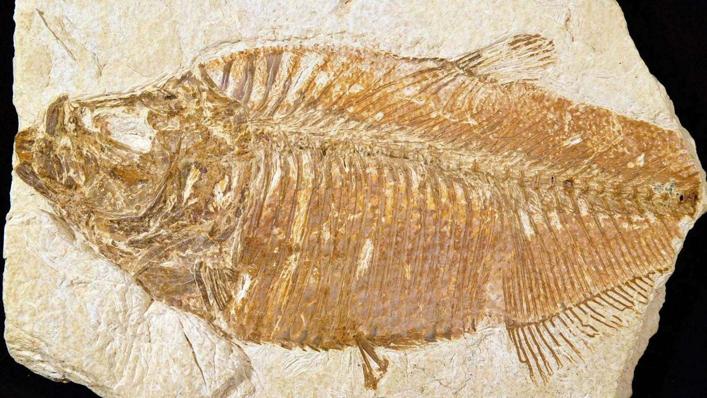
No. 17.01-A
Specimen AFound: Fossil Butte, WyomingAge: about 52 million yearsWhat is it? You decide.
Names a part you saw
Asks a question
📚 Word WallWords scientists use
What to do: Tap or click each card to flip it and read what the word means.
17.01
Scene 2The Lesson
OptiEvery fossil tells a story. In this scene you will turn a fossil's story into a movie, test teeth in the Bite Lab, and dig down through a canyon wall.
🪨 Part 1Fossils Are Clues in Stone
A fossil is what is left of a living thing from long, long ago. Bones, shells, leaves, and even footprints can become fossils.
Fossils hold clues, like the shape of a fin or the lines in a leaf. Each clue is a piece of evidence.
🎞️ Put the scenes in orderHow does a fish become a fossil?
👀 What am I looking at? Four real photos. Each one shows one scene from a fossil's story, but they are mixed up. The dark film strip has four empty frames, from first (1) to last (4).
What to do: Drag each photo into the film strip, from first to last. You can also tap a photo, then tap a frame. Get the order right and your strip becomes a movie.
1
2
3
4
Frame 1 is empty. Which scene comes first?
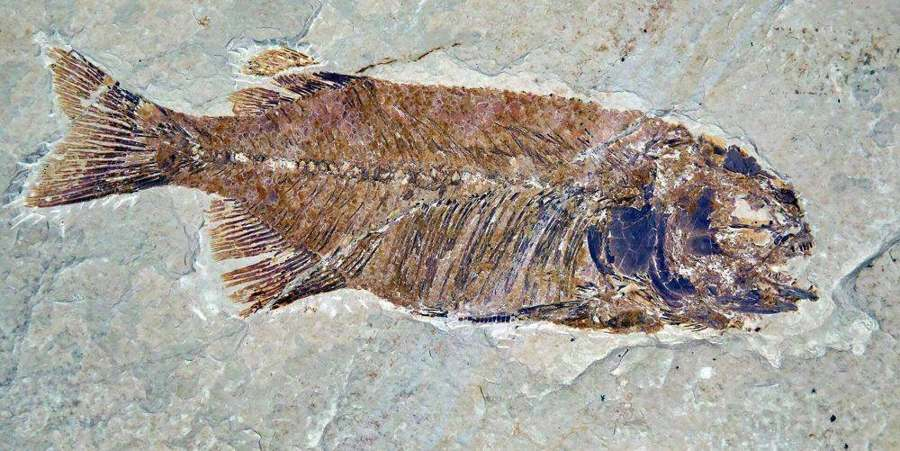
A model
EVIDENCE PRESERVED
Quick check
Look at scene 3 again. The fish's bones are now…
🐟 Part 2Fossils Tell Us About Ancient Living Things
Scientists look closely at a fossil's shape. A fish fossil with fins and a backbone shows what the fish looked like and how it swam. A tooth's shape tells what an animal ate. When scientists use clues like these to figure something out, they infer.
Many of these living things are extinct. None are alive anywhere on Earth today. Fossils are the only way we know they lived.
🦷 The Bite LabWhat can a tooth's shape tell us?
👀 What am I looking at? Two real fossil teeth from two extinct animals, each on a lit specimen tray. A tooth's shape is a clue to the job it did. Under the trays are test materials for a model: a real leaf and a strip of soft clay.
What to do: Follow the steps one at a time. You will pick, test, and then explain.
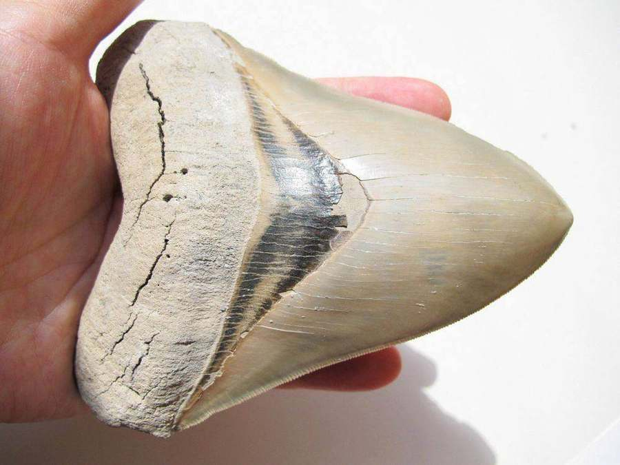
Specimen A
Drop a test material here
Curator's interpretation
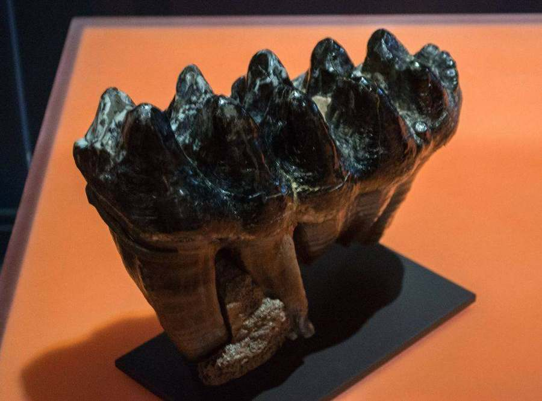
Specimen B
Drop a test material here
Curator's interpretation
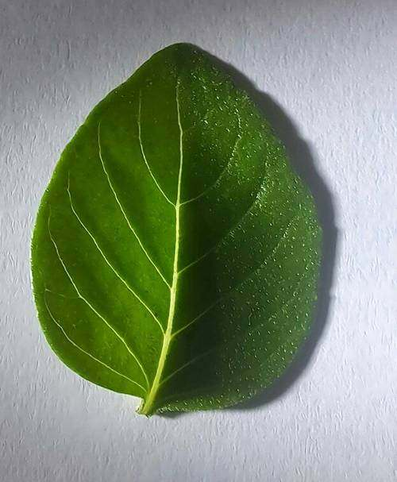
Leaf
Clay strip(a model of meat)
🎬 Behind the scenes · Gone forever
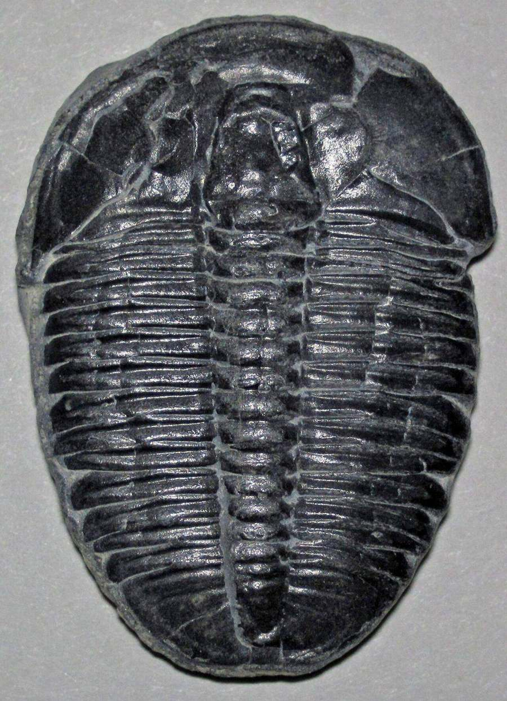
This is a trilobite. Trilobites lived in the sea for about 270 million years. Then every last one died out. They are extinct, so fossils are the only way we know they lived.
🌊 Part 3Fossils Tell Us About Ancient Places
Here is a surprise: scientists have found sea shells on mountaintops and fish in dry deserts. That is not a mistake. It is evidence that those places were very different long ago.
A fossil tells you about its environment. A fern fossil means the land was warm and wet. A coral fossil means warm, shallow sea water once covered that spot.
⛏️ The excavation wallRead the Grand Canyon like a book
👀 What am I looking at? A cutaway (a slice) of a cliff, like the walls of the Grand Canyon. It is a model of four real rock layers. A real fossil found in each layer is hidden under the dust. The brass dial on the left is a time elevator. It shows how far back in time you are.
What to do: First, make a prediction. Then brush the glowing layer: drag across it (or tap it again and again) until the fossil shows.
Predict first
Which layer do you think formed first, long, long ago?
▶
Today270 million years ago275 million280 million500 million
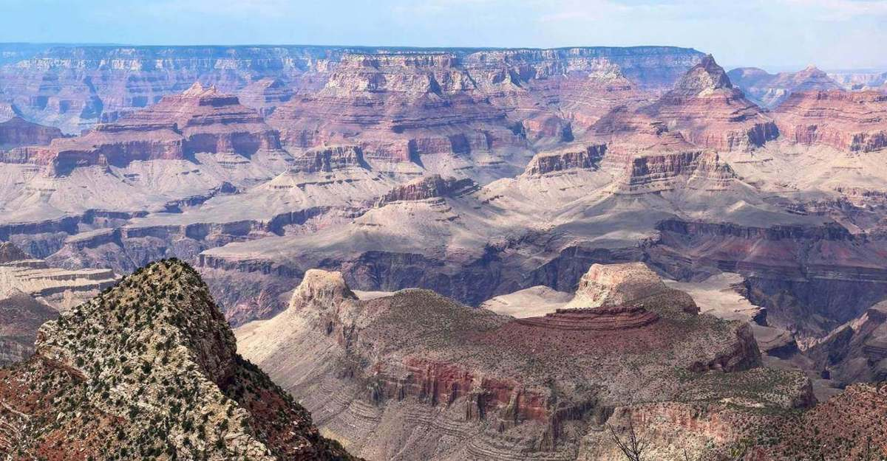
Today
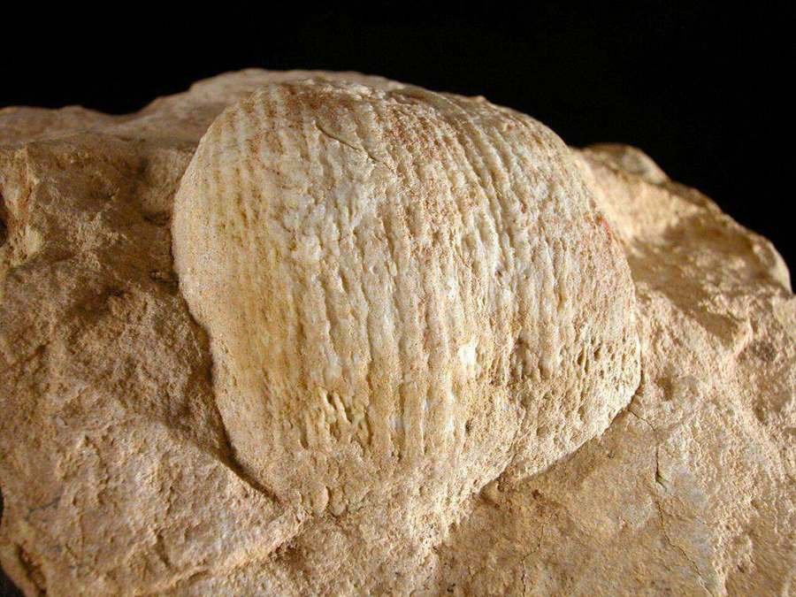
Layer 1
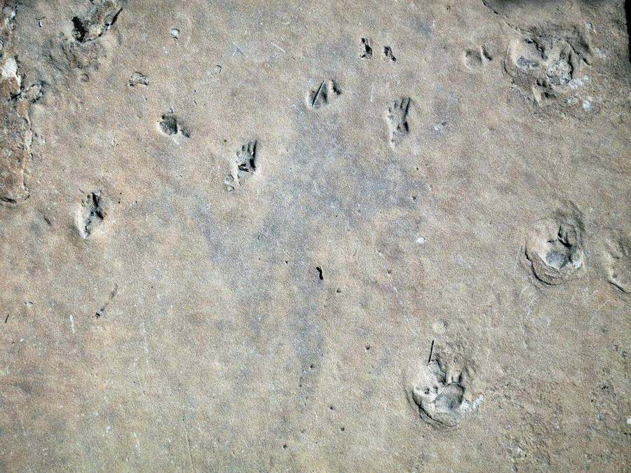
Layer 2
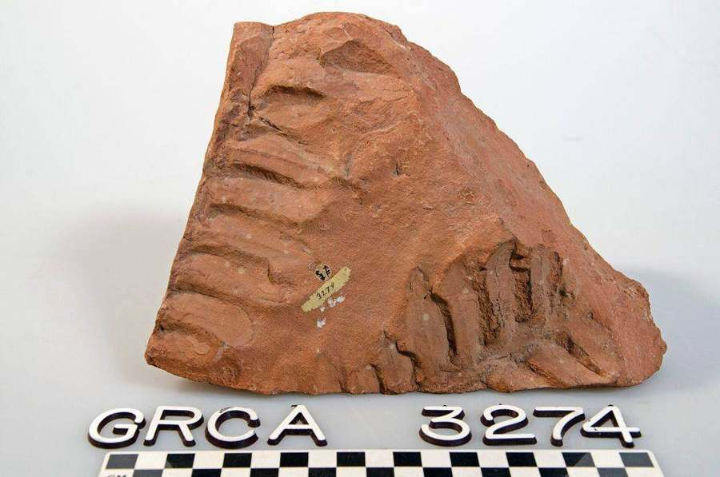
Layer 3
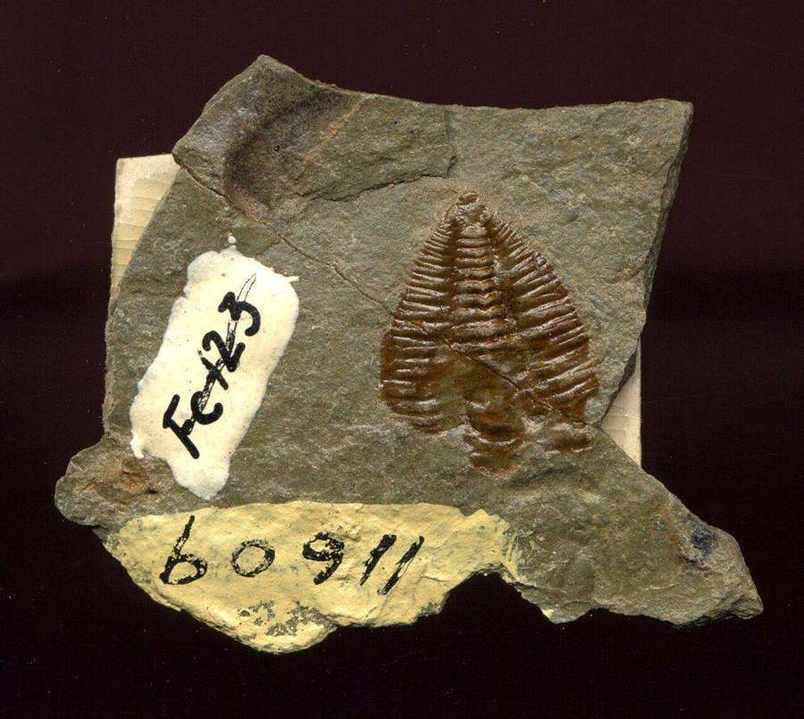
Layer 4
YOUNGEROLDER
In this undisturbed rock column, the lower layers formed first. Undisturbed means nothing flipped or mixed the layers.
Think like a scientist
Layer 1 holds a sea animal. Layer 2, right under it, was a desert of sand dunes. Did the sea animals crawl into the desert?
🎬 Director's cut
The top of the world was once the sea floor
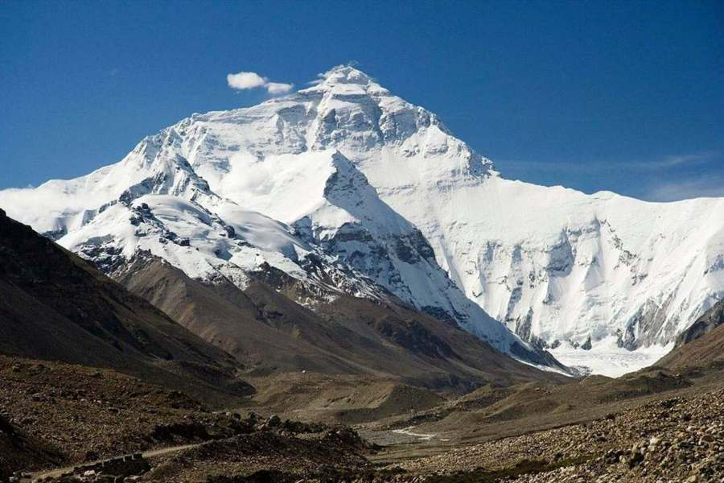
Mount Everest, the tallest mountain on Earth.
The rock at the very top of Mount Everest is limestone, a rock that forms in the sea. Scientists have found fossils of sea animals in it, including trilobites.
Very slowly, over millions of years, that old sea floor was pushed up into the sky.
A trilobite from Utah.
⭐ Key idea: Fossils are evidence. They show what living things looked like and where they lived, even if those living things are extinct and those places have changed. In undisturbed rock, deeper layers hold older fossils.
🕵️ Part 4Fossil Detective
👀 What am I looking at? Five real fossils, A to E. Each one came from a different place. Under the fossils is an evidence chart, a table that holds what you figure out.
What to do: Pick 3 of the 5 fossils, one at a time. For each one, tap a clue you see and pick what it was. Then predict where it lived and watch the past appear. Your answers fill the chart.
Fossil
What I observe
Possible organism
Possible environment
My evidence
🌍 Rebuild the ancient sceneUse your evidence to rebuild a place OPTIONALOpen ▾
What to do: Pick one you solved. Pick the place it points to, then pick the living things that belong there.
Pick one to start.
Last step
Pick one from your chart and explain it.
Start with: "Fossil __ may show a…"
Names the living thingGives a reason (because)Names the place
17.01
Scene 3Self-Check
OptiA quick check before the big job. It's not graded. It's just for you, so give it your best try.
Question 1 of 3
A scientist finds a fossil of a coral reef creature in a dry desert. What does this evidence most likely tell us?
Question 2 of 3
Which best describes what it means to infer something from a fossil?
Question 3 of 3
Scientists find two fossils in the same place, one deeper in the rock than the other. What can they infer about the two fossils?
17.01
Scene 4Assignment
OptiTime to show what you know. Use your clues, just like a real scientist.
🔍 Part AMatch fossils to evidence
What to do: Read each fossil clue. Pick the best answer, or type your answer.
1. A fish fossil with fins and a backbone is found in dry, rocky ground. Where did this fish most likely live long ago?
2. A large curved tooth with sharp ridges is found deep underground. What does the tooth's shape tell you about how the animal got its food?
Says what it ate or how it got food
3. A leaf fossil with thick veins and a wide shape is found in rock. What kind of climate does this plant fossil show?
🚀 Part BShort answer
What to do: Answer in complete sentences. Use your science words.
4. What is a fossil? Name two different kinds of things that can become fossils, with an example of each.
Says what a fossil isNames two kinds
6. Why are fossils useful evidence about living things that are now extinct? What would we lose if there were no fossils?
Talks about extinct living thingsSays what we would lose
✍️ Write and explainTell the story of one fossil
What to do: Pick one fossil from your evidence chart. Use at least two of these words: fossil, evidence, infer, environment, extinct.
Start with: "When I looked at this fossil, I noticed…"
Start with: "I can infer from this that the organism…"
Start with: "This makes sense because I learned that…"
fossilevidenceinferenvironmentextinct
Science words used: 0 of 2
🎨 Part CDraw and label
What to do: Draw two rock layers, one on top of the other. Draw a fossil in each layer. Then write what each fossil tells about the past.
🎬 Your question from Scene 1Can you answer it now?
You haven't written a question yet. Go to the Warm-Up to add one.
📋 My answersEverything you wrote, in one place
(Your answers show up here as you write.)
How to turn in: Copy your answers and paste them into the Canvas assignment. Or download the file and upload it. Then press Save my drawing in Part C and upload your drawing too.
✅ Checklist
What to do: Tap each item when it is done. Items you finish on the page check themselves.
My evidence chart has 3 fossils and my explanation.
Part A: all three answers.
Part B: questions 4 and 6.
Part C: my drawing and both labels.
Write and explain, with at least two science words.
🎬 Premiere my fossil storyYour exhibit
What to do: Check your exhibit. Pick the one you wrote about, add your first name, then press Premiere film.
My specimen
I observed…
I think it was…
My evidence…
It tells us…
🎞️ This film's frames
Frame 1 Evidence preserved
Frame 2 The Bite Lab
Frame 3 The excavation
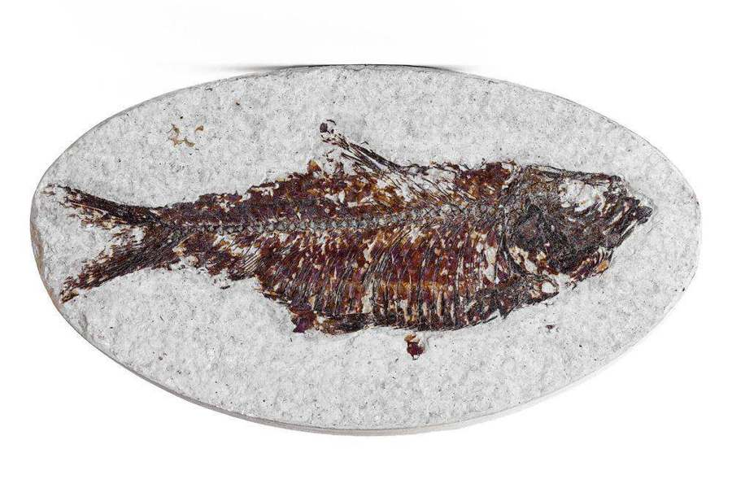
Frame 4 Fossil detective
Earn all four frames in the Lesson, then finish the checklist.
🔜 Coming up next17.02 · Fossil Dig Simulation
Next time, you grab the brushes. You will run your own fossil dig and decide what you've found.